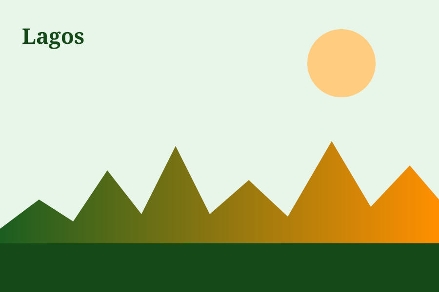
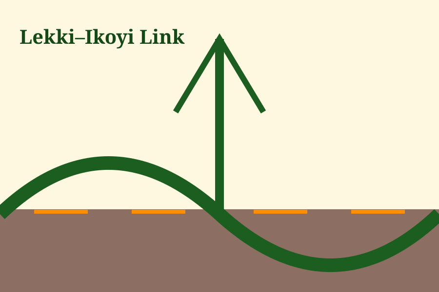
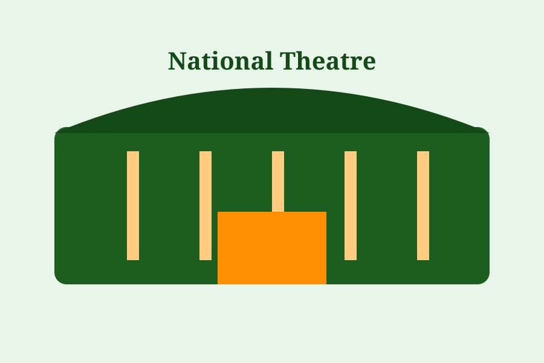

01
Commercial energy
Business districts such as Victoria Island, Ikeja, Yaba, Lekki, and Apapa represent different parts of Lagos's commercial ecosystem.
Lagos is Nigeria's commercial centre and a major hub for trade, technology, manufacturing, creative industries, finance, logistics, and services. This page uses local highlights to orient visitors to the community.



Business districts such as Victoria Island, Ikeja, Yaba, Lekki, and Apapa represent different parts of Lagos's commercial ecosystem.
Lagos brings together a large and diverse population, creating a broad customer base and a deep pool of entrepreneurs and professionals.
Conferences, trade fairs, sector groups, training programmes, and networking activities create opportunities for business relationships.
September 23–24, 2026 · 10:00 AM
LCCI
Conference & Exhibition Center, Ikeja.
September 28, 2026 · 10:30 AM
Victoria
Island, Lagos.
September 29, 2026 · 11:00 AM
Commerce
House, Victoria Island.
Event information checked against the LCCI events listings on September 19, 2026. See the official events calendar for changes and registration details.